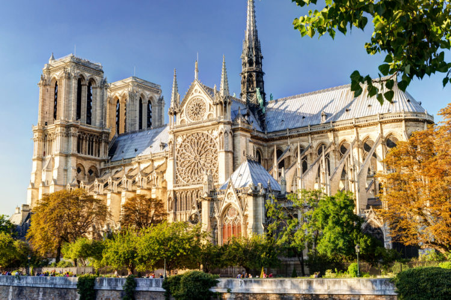

Apprendre le français
Bienvenue à ce court cours de français où vous apprendrez les bases du français et des informations intéressantes concernant la langue et le pays!
Pourquoi le français? Le français est l'une des langues les plus parlées au monde, avec environ 310 millions de locuteurs dans le monde. C'est la langue officielle de 27 nations indépendantes réparties sur tous les continents.
Journée internationale de la francophonie
La Journée internationale de la francophonie est une célébration mondiale d'une journée de l'Organisation internationale de la francophonie (OIF) ayant lieu le 20 mars de chaque année.
Cet événement a été créé en 1988 comme un moyen pour les 70 États et gouvernements de l'Organisation internationale de la francophonie (OIF) de célébrer leur lien commun — la langue française — aussi bien que leur diversité. Cette journée consacrée à la langue française qui unit 320 millions de locuteurs est l'occasion pour les francophones du monde entier de fêter leur solidarité et leur désir de vivre ensemble, dans leurs différences et leur diversité, partageant ainsi les valeurs de la francophonie.
La date choisie pour cette célébration est l'anniversaire de la création de la première organisation francophone, l'Agence de coopération culturelle et technique, lors de la conférence de Niamey en 1970.
En mars, autour de cette journée, l'Organisation internationale de la francophonie et plusieurs pays organisent la Semaine de la langue française et de la francophonie.
Faits amusants
La loi du "français pur" - La France possède une institution spéciale appelée L'Académie Française qui protège la pureté de la langue française, essayant souvent d'empêcher l'adoption de mots anglais comme email" (ils recommandent plutôt "courriel").
L'influence sur l'anglais - Environ 30 à 45 % des mots anglais viennent du français ! Après la conquête normande de l'Angleterre en 1066, le français est devenu la langue de la noblesse, influençant le vocabulaire anglais (par ex., beef vient de bœuf, royal de royal).
L'une des langues les plus rapides - Mesuré en syllabes par seconde, le français est l'une des langues les plus rapides, aux côtés de l'espagnol et du japonais.
Autrefois la langue la plus parlée en Europe - Avant que l'anglais ne devienne la langue dominante dans le monde, le français était la principale langue de la diplomatie, du commerce et de la noblesse en Europe du XVIIᵉ au XIXᵉ siècle.
Un système de comptage bizarre - Au lieu d'un mot séparé pour 70, 80 et 90, le français utilise des calculs !
Les Suisses et les Belges en ont eu marre et utilisent septante (70), huitante (80) et nonante (90).
Attractions touristiques
Les voyageurs du monde entier rêvent au moins une fois dans leur vie de visiter le pays, chanté par de nombreux poètes et artistes comme l'un des endroits les plus beaux et les plus romantiques du monde, qui a préservé la culture la plus riche et des traditions séculaires. Il s'agit de la France, un pays qui est devenu le symbole de l'amour, de la beauté, de la sophistication et d'un patrimoine historique unique. Paris est le centre historique du pays, où se trouvent les sites les plus célèbres de France. Vous ne savez pas quoi voir en France ? Ne manquez pas de lire ce tour d'horizon des lieux les plus intéressants de ce charmant pays.
La Tour Eiffel
La Tour Eiffel est le symbole de Paris et l'un des monuments les plus visités au monde. Construite par Gustave Eiffel pour l'Exposition Universelle de 1889, elle devait à l'origine être démontée après 20 ans, mais elle est restée debout et est devenue un emblème de la France. Haute de 330 mètres, elle offre une vue panoramique incroyable sur la capitale. La nuit, elle brille de mille feux grâce à son éclairage scintillant qui s'active toutes les heures.

Le Louvre
Le Louvre est le plus grand musée du monde et l'un des plus prestigieux. Ancien palais royal, il abrite aujourd'hui des milliers d'œuvres d'art, dont la célèbre Mona Lisa de Léonard de Vinci et la Vénus de Milo. Son entrée est marquée par une pyramide de verre emblématique, ajoutée en 1989. Avec ses collections allant de l'Antiquité à l'époque moderne, le Louvre est un passage incontournable pour les amateurs d'art et d'histoire.

Disneyland Paris
Ouvert en 1992, Disneyland Paris est le parc d'attractions le plus visité d'Europe. Il propose un monde magique inspiré des films Disney, avec des attractions emblématiques comme Space Mountain, Pirates of the Caribbean et It's a Small World. Le château de la Belle au Bois Dormant, situé au cœur du parc, est l'un des lieux les plus photographiés. Avec ses spectacles, ses parades et son ambiance féérique, Disneyland Paris fait rêver petits et grands.
Cathédrale Notre-Dame
La Cathédrale Notre-Dame de Paris est l'un des monuments les plus emblématiques de la capitale française. Construite entre le XIIᵉ et le XIVᵉ siècle, elle est un chef-d'œuvre de l'architecture gothique, célèbre pour ses magnifiques vitraux, ses gargouilles et ses impressionnants arcs-boutants.
Elle a été le témoin de nombreux événements historiques, comme le couronnement de Napoléon en 1804. Malheureusement, un incendie en avril 2019 a gravement endommagé la cathédrale, détruisant sa flèche et une partie de sa toiture. Depuis, d'importants travaux de restauration sont en cours.
Notre-Dame reste un symbole fort de Paris et de l'histoire de France, attirant chaque année des millions de visiteurs du monde entier.
Les bases du français
Les salutations
- Salut!
- Bonjour!
- Bonsoir!
- Bonne nuit!
- Au revoir!
- À bientôt!
- À demain!
- Comment ça va? ⟹ Ça va bien/mal.
Conjugaison des verbes
Premier groupe (-ER): Tous les verbes du premier groupe ont la même conjugaison et se terminent par un "er". Pour la démonstration, nous allons conjuguer le verbe "parler" au présent.
- Je parle
- Tu parles
- Il/Elle parle
- Nous parlons
- Vous parlez
- Ils/Elles parlent
Deuxième groupe (-IR): Tous les verbes du deuxième groupe ont la même conjugaison et se terminent par "ir". À titre de démonstration, nous allons conjuguer le verbe "finir" au présent.
- Je finis
- Tu finis
- Il/Elle finit
- Nous finissons
- Vous finissez
- Ils/Elles finissent
Troisième groupe(-RE): Les verbes du troisième groupe se terminent par "re" et sont irréguliers, ce qui signifie que la conjugaison n'est pas cohérente dans ce groupe, mais à titre d'exemple, nous allons conjuguer le verbe "prendre", car c'est l'un des verbes les plus utilisés du troisième groupe.
- Je prends
- Tu prends
- Il/Elle prend
- Nous prenons
- Vous prenez
- Ils/Elles prennent
Autres verbes de base
- Être: je suis, tu es, il/elle est, nous sommes, vous êtes, ils/elles sont
- Avoir: j'ai, tu as, il/elle a, nous avons, vous avez, ils/elles ont
- Aller: je vais, tu vas, il/elle va, nous allons, vous allez, ils/elles vont
- Faire: je fais, tu fais, il/elle fait, nous faisons, vous faites, ils/elles font
- Vouloir: je veux, tu veux, il/elle veut, nous voulons, vous voulez, ils/elles veulent
- Pouvoir: je peux, tu peux, il/elle peut, nous pouvons, vous pouvez, ils/elles peuvent
- Devoir: je dois, tu dois, il/elle doit, nous devons, vous devez, ils/elles doivent
Nombres de 1 à 100
- 1 - un
- 2 - deux
- 3 - trois
- 4 - quatre
- 5 - cinq
- 6 - six
- 7 - sept
- 8 - huit
- 9 - neuf
- 10 - dix
- 11 - onze
- 12 - douze
- 13 - treize
- 14 - quatorze
- 15 - quinze
- 16 - seize
- 17 - dix-sept
- 18 - dix-huit
- 19 - dix-neuf
- 20 - vingt
- 21 - vingt et un
- 22 - vingt-deux
- 23 - vingt-trois
- 24 - vingt-quatre
- 25 - vingt-cinq
- 26 - vingt-six
- 27 - vingt-sept
- 28 - vingt-huit
- 29 - vingt-neuf
- 30 - trente
- 31 - trente et un
- 32 - trente-deux
- 33 - trente-trois
- 34 - trente-quatre
- 35 - trente-cinq
- 36 - trente-six
- 37 - trente-sept
- 38 - trente-huit
- 39 - trente-neuf
- 40 - quarante
- 41 - quarante et un
- 42 - quarante-deux
- 43 - quarante-trois
- 44 - quarante-quatre
- 45 - quarante-cinq
- 46 - quarante-six
- 47 - quarante-sept
- 48 - quarante-huit
- 49 - quarante-neuf
- 50 - cinquante
- 51 - cinquante et un
- 52 - cinquante-deux
- 53 - cinquante-trois
- 54 - cinquante-quatre
- 55 - cinquante-cinq
- 56 - cinquante-six
- 57 - cinquante-sept
- 58 - cinquante-huit
- 59 - cinquante-neuf
- 60 - soixante
- 61 - soixante et un
- 62 - soixante-deux
- 63 - soixante-trois
- 64 - soixante-quatre
- 65 - soixante-cinq
- 66 - soixante-six
- 67 - soixante-sept
- 68 - soixante-huit
- 69 - soixante-neuf
- 70 - soixante-dix
- 71 - soixante et onze
- 72 - soixante-douze
- 73 - soixante-treize
- 74 - soixante-quatorze
- 75 - soixante-quinze
- 76 - soixante-seize
- 77 - soixante-dix-sept
- 78 - soixante-dix-huit
- 79 - soixante-dix-neuf
- 80 - quatre-vingts
- 81 - quatre-vingt-un
- 82 - quatre-vingt-deux
- 83 - quatre-vingt-trois
- 84 - quatre-vingt-quatre
- 85 - quatre-vingt-cinq
- 86 - quatre-vingt-six
- 87 - quatre-vingt-sept
- 88 - quatre-vingt-huit
- 89 - quatre-vingt-neuf
- 90 - quatre-vingt-dix
- 91 - quatre-vingt-onze
- 92 - quatre-vingt-douze
- 93 - quatre-vingt-treize
- 94 - quatre-vingt-quatorze
- 95 - quatre-vingt-quinze
- 96 - quatre-vingt-seize
- 97 - quatre-vingt-dix-sept
- 98 - quatre-vingt-dix-huit
- 99 - quatre-vingt-dix-neuf
- 100 - cent
Pronoms possessifs
- Mon, ma, mes
- Ton, ta, tes
- Son, sa, ses
- Notre, nos
- Votre, vos
- Leur, leurs